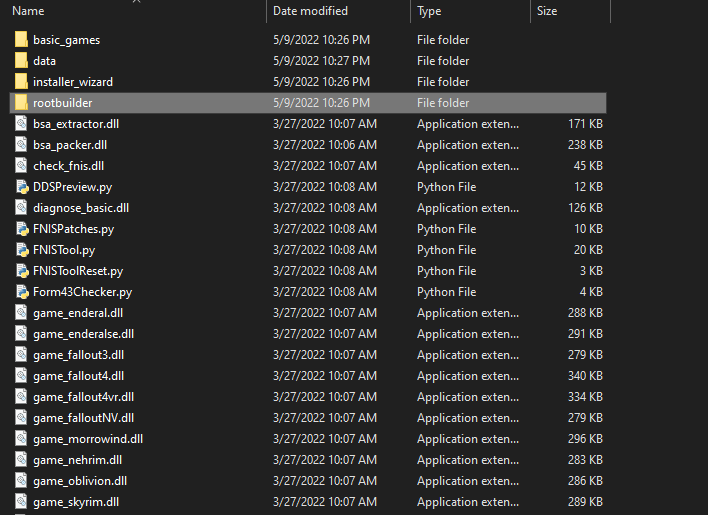
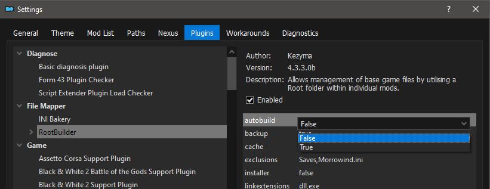

In this step, we will install and configure Mod Organizer 2, the best mod manager for any Bethesda game.
Installing Mod Organizer 2
If you are about to ignore this section or do it differently because you already have Mod Organizer 2 installed for a different game somewhere else, do not get confused. Download and run the installer again anyway - the following steps apply to absolutely everyone. While it may seem counter-intuitive, you need to download the installer again and make a new portable instance. This is the case no matter how many other MO2 setups you may already have - this guide will completely ignore those setups by design
- Download the Mod Organizer 2 main file from here
- Once the download has finished, run the installer
- When prompted to choose an install location, pick any unoccupied location outside of any default Window
folders and outside of the game's Root folder (e.g.
C:/Modding/Mod Organizer 2/) - Although it doesn't technically have to be installed on the same drive as the game, it is still recommended to install on an SSD if possible
- Click Next until the installer finishes
Initial Setup
- Run ModOrganizer.exe
- You will be prompted with a pop-up called Creating an instance, in which you should just select Next
- On the next page, select Create a portable instance
- On the next page, select TTW
- On the next page, keep the Location file path default


If you have MO2 installed on an SSD or a HDD with little space, you can check the Show advanced options box and change the Downloads file path to a different drive with more space. This will not affect download/game performance, and the downloads can be deleted after the mods have been installed.
- On the last page, select Finish
- MO2 will launch and prompt you with a pop-up called Show tutorial?, in which you should select No
- From the pop-up called Register?, select Yes
- This pop-up will not show up if you have already registered a different instance of MO2
Root Builder Setup
If you want to know how Root Builder works, read here. Steps will be provided anyway in case you only want to follow along without understanding the plugin.- Download the Root Builder main file from here
- Once the download has finished, click the
 button at
the top of MO2 and select Open MO2 Plugins Folder
button at
the top of MO2 and select Open MO2 Plugins Folder - Place the rootbuilder folder from the extracted archive into the opened folder 
- Close Mod Organizer 2 and open it again so the plugin can be detected before moving onto the next section
Configuring Settings
- If there is a plugin called FalloutNV_lang.esp in the right pane of Mod Organizer 2, navigate to the game's Data folder and delete it
- If you do not know what the game's Data folder is, read the Key Terminology section from the Initial Setup page
The translation plugin must be deleted because it directly edits 1000s of records to change the language, which will cause many incompatibilities with most mods.
- Select the
 button at the top of MO2 to open the
settings
button at the top of MO2 to open the
settings
- In the Theme tab, you can select a different style from the drop-down menu at the top
- The Many: I use the dracula theme
- Audixas: I use vs15 Dark-Green for TTW
- VishVadeva50: I use 1809 Dark Mode
- In the Nexus tab, select Connect to Nexus
- This option will not show up if you have already connected your Nexus account on a different MO2 instance
- MO2 will open your browser and prompt you to authorize the connection
- Once you authorize it, you can close out of your browser and of the MO2 settings
- Allow MO2 to restart if it asks
- In the Plugins tab, select RootBuilder in the left pane, then set "autobuild" to false in the dropdown on the right 
- Select the
 button at the top of MO2 to open the
profiles menu
button at the top of MO2 to open the
profiles menu - Select the Default profile and make sure both Use profile-specific Game INI Files and Automatic Archive Invalidation are checked at the bottom

If at any point you get a pop-up called INI file is read-only, select Remember my choice from the drop-down at the bottom then click Clear the read-only flag

Tweaking FalloutCustom.ini
In this step, we will configure the game's INI files to increase performance/stability. We will take advantage of JIP LN NVSE's FalloutCustom.ini feature to make our changes, which allows for INI changes to be made safely without editing the default INIs. Because of this, these changes will not take affect until you install JIP LN NVSE in the Utilities step.
- Click the
 button at the top of MO2 and select
INI
Editor
button at the top of MO2 and select
INI
Editor - Select the FalloutCustom.ini tab, which should be blank
- Make sure you are in the FalloutCustom.ini tab and NOT the Custom.ini tab
- Paste in the following:
Notes
It is highly recommended to avoid changing any other INI settings not in the guide, and to avoid using INI "optimization" tools like BethINI. The changes these will make are placebo at best and dangerous at worst. You will realistically not need any other tweaks than the ones already in the guide.
Mod Installation Advice
If you are completely unfamiliar with Mod Organizer 2, I recommended watching GamerPoet's video about mod installation in MO2. As it was made for Skyrim, it has some information that does not apply to New Vegas, such as the Steam Workshop part which you can just ignore. However, the rest of the information about downloading/installing mods from Nexus still applies.
When the guide says to install a mod, it will be formatted as follows: Main File - Example Mod
1.5. This is referring to the mod's category on Nexus, the file name, and the file version.

Unless instructed otherwise,
simply download the listed file using the Mod Manager Download button and install it
normally through MO2. If you do not
know how to install mods through MO2, please watch the video linked above. Sometimes, a mod will not have a
Mod Manager Download, or will be hosted on a site other than Nexus. If that is the case, do
the following:
- Click the Manual Download button (or whatever the download button is for the respective site)
- Once the download has finished, click the
 button at the top of MO2 or use the CTRL + M shortcut.
button at the top of MO2 or use the CTRL + M shortcut. - From the new window, navigate to where the file was downloaded to and double-click it
- Finish the install normally
When downloading multiple files from the same page, you will be prompted with a box in Mod Organizer 2 with the options Merge, Replace, and Rename. You should select the Rename option and rename the mod to its respective file name. This will make MO2 install them as separate files for easier management. If you are updating from an old version of a mod, you should select Replace. This will delete all the files from the old version of the mod and replace them,with the ones from the new version. This is the only time you should use the Replace option, otherwise always use Rename.
If at any point during mod installation you get a message called Extract BSA, select No